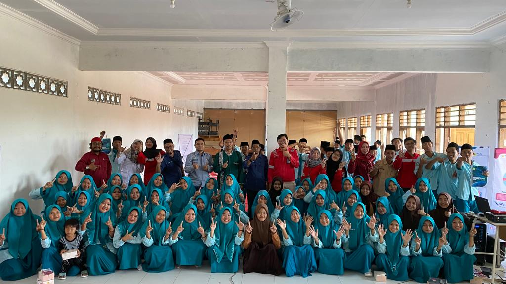

Berita Terbaru

Audit SMK3 2023
Pelaksanaan audit eksternal SMK3 PP No. 50 Tahun 2012 dilaksanakan bersama Pusertif sebagai auditor eksternal sebagai usaha untuk meningkatkan kualitas SMK3 Perusahaan.

M Saefudin Khamid
24 Oktober 2023

Health Talk
Departemen K3 bersama dengan Dr. Teguh sebagai dokter perusahaan melaksanakan Program Health Talk dengan Sosialisasi mengenai Penyakit Tuberkolosis pada pekerja.

Estiningtyas Widyawati
4 Oktober 2023


ABAT HIV/AIDS
PT PLN Nusantara Power melakukan kegiatan CSR di SMA Manbail Huda dengan melakukan Sosialisasi "ABAT" (Aku Bangga Aku Tahu)" terkait penyakit HIV/AIDS.